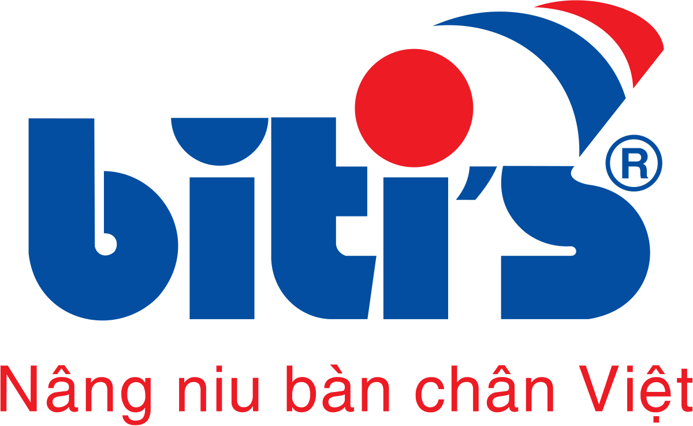

|  | Trang chủ | Thông Tin | Sản Phẩm |
|
Qua hơn 39 năm hoạt động sản xuất kinh doanh với bao thăng trầm và thách thức, giờ đây, Biti’s đã lớn mạnh và phát triển đi lên cùng đất nước, trở thành một thương hiệu uy tín, tin cậy và quen thuộc với người tiêu dùng và là niềm tự hào của người Việt Nam về một “Thương hiệu Quốc gia” trong lĩnh vực Giày dép uy tín và chất lượng.
Bước Chân Không Mỏi
Từ một cơ sở sản xuất nhỏ khởi nghiệp từ năm 1982 và trở thành HTX mang tên Bình Tiên chuyên sản xuất dép Cao su
tại Quận 6 với vài chục công nhân và hơn hết là một tấm lòng vì sự phát triển kinh tế đất nước của những người
chủ tâm huyết, Biti’s đã trải qua giai đoạn của nền kinh tế bao cấp với nhiều khó khăn. Thế nhưng, hơn 33 năm
trôi qua, như một “bước chân không mỏi”, Công ty TNHH Sản Xuất Hàng Tiêu Dùng Bình Tiên (Biti’s) đã từng bước
xây dưng cho mình một chiến lược sản xuất và xuất khẩu mang tầm thời đại, tạo ra một thương hiệu Giày dép Biti’s
gắn liền với nhu cầu, thị hiếu người tiêu dùng. Hiện nay, công ty Biti’s trở thành một đơn vị mạnh, thể hiện sự
bứt phá trong lãnh vực SXKD giày dép; có đủ nhân lực, vật lực, tài lực để phát triển ngành nghề và đem đến
những thành quả cao hơn.
Quy Mô Rộng Khắp
Một hệ thống phân phối sản phẩm Biti’s trải dài từ Nam ra Bắc với 07 Trung tâm chi nhánh, 156 Cửa hàng tiếp thị
và hơn 1.500 trung gian phân phối bán lẻ, đã tạo công ăn việc làm ổn định cho hơn 9.000 người lao động tại Tổng
Công ty Biti’s và Công ty Dona Biti’s với sản lượng hàng năm trên 20 triệu đôi, chủng loại sản phẩm phong phú,
đa dạng về kiểu dáng, mẫu mã như giày thể thao cao cấp, giày nữ thời trang, giày tây da, giày vải, dép xốp EVA,
hài đi trong nhà … Tại Trung Quốc, Biti’s đã thiết lập 04 văn phòng đại diện với 30 tổng kinh tiêu, hơn 300 điểm
bán hàng để từng bước đưa sản phẩm Biti’s chiếm lĩnh thị trường biên mậu đầy tiềm năng này. Với thị trường
Campuchia đầy tiềm năng, Biti’s có nhà phân phối chính thức Công Ty Cambo Trading phân phối sản phẩm Biti’s trên
toàn lãnh thổ Campuchia. Biti’s đã xuất khẩu qua 40 nước trên thế giới như Ý, Pháp, Anh, Mỹ, Nga, Nhật, Nam Mỹ,
Mêxicô, Campuchia,… . Ngoài ra, Biti’s cũng được các khách hàng quốc tế có thương hiệu nổi tiếng như Decathlon,
Clarks, Speedo, Skechers, Lotto,… tin tưởng chọn lựa trở thành đối tác gia công với nhiều đơn hàng giá trị lớn.
BỨT PHÁ ĐỂ THÀNH CÔNG
Với tâm niệm phải “Sáng tạo vì sứ mệnh tồn tại và phát triển công ty”, hiện nay, công ty Biti’s đang quan tâm
phát triển chiến lược đầu tư dài hạn và bền vững. Công ty tin rằng các lĩnh vực đầu tư trong tương lai như
khách sạn, resort, du lịch, trung tâm thương mại … với uy tín và chất lượng phục vụ sẽ là tôn chỉ hàng đầu cho
mọi hoạt động sản xuất kinh doanh của doanh nghiệp Biti’s.